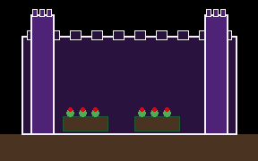
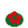

dia 14 de 30
torres florescendo — continue jogando!

sudoku
paciência
termo
cruzad.
conexo


Mantém a hierarquia mais parecida com a tela atual (imagem grande no topo), mas com o novo kit: moldura bevel, sem retângulo vazio, ícones de conquista soltos (desbloqueados = cor cheia + sombra pixel, bloqueados = dessaturado/apagado). Conquistas ganham legenda (nome do jogo) que não existia antes.
Reaproveita o mesmo padrão de "cards empilhados" usado no resto do app (jogos, home) — consistência visual mais forte entre telas. Barra de progresso em blocos pixel (estilo HP bar de RPG) deixa "dia 14 de 30" mais tangível que só o número. Conquistas em slots quadrados individuais (moldura própria por ícone) em vez de soltos numa fileira.
Puxa mais pro tema "jardim que cresce com vocês dois" já presente no texto do rodapé ("seu jardim") — a imagem vira uma "foto" com legenda tipo álbum, o progresso vira uma trilha de folhinhas em vez de barra genérica, e as conquistas ganham "pedestais" (mais trabalho visual, mas mais afetivo/temático — combina com o espírito de presente pessoal do projeto).